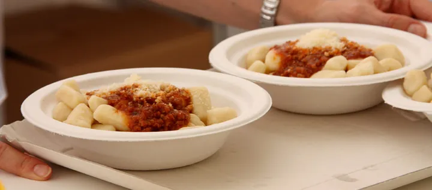

Friuli
da ven 4 set a dom 6 set · dalle 19:00
50a Sagra delle Patate di Godia
Gnocchi fatti a mano, frico, musica, magia e attivita per bambini nel fine settimana conclusivo.
 Indicazioni
Indicazioni
- Costi e prenotazioni
- Ingresso libero · consumazioni a pagamento · Nessuna prenotazione per l’ingresso
- Programma
- Date confermate. Il sito ufficiale conferma l’edizione 2026 e il fine settimana dal 3 al 6 settembre; il programma minuto per minuto è pubblicato soprattutto in forma grafica.
- In caso di maltempo
- Nessuna indicazione specifica pubblicata.
- Note
- Gnocchi, frico, carne alla griglia e altre specialità disponibili sul posto o da asporto.
L’EVENTO
Descrizione completa
La cinquantesima edizione celebra gli gnocchi di patate preparati a mano, il frico, la carne alla griglia e altre specialità locali. Più di duecento volontari animano la festa, con servizio sul posto, asporto, musica e attività per famiglie.
Gnocchi, frico, carne alla griglia e altre specialità disponibili sul posto o da asporto.
IL PROGRAMMA
Programma e orari
Appuntamenti raccolti dalle fonti elencate. Dove manca un orario, non è ancora disponibile in questa scheda.
Venerdì 4 settembre
- Apertura chioschi e cucina
- Gnocchi Drive al campetto di Beivars
- Musica serale
Sabato 5 settembre
- Chioschi, cucina e asporto
- Gnocchi Drive al campetto di Beivars
- Musica serale
Domenica 6 settembre
- 08:30 · Ginnastica del risveglio a Beivars
- Apertura anche a pranzo
- Attività per bambini e musica
INFORMAZIONI UTILI
Prima di partire
- Gnocchi, frico, carne alla griglia e altre specialità disponibili sul posto o da asporto.
- Contatti: Gnocchi Drive: 350 514 5347
ORGANIZZAZIONE